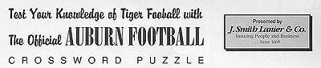

|

|
|
| |
Note: Please print this page to work crossword puzzle. |
| |
Across
1 Former Auburn Tiger who plays for the Tennessee Titans: ____ Del Greco
2 "Ever to conquer, never to _____."
8 City in which University of Wyoming is located
9 Auburn's first football coach (last name)
11 Name of the Wyoming football stadium: ______ Memorial Stadium
13 Auburn's first All-American in both football and baseball: ________ Hitchcock
14 Auburn University library: Ralph Brown ________
16 Last AU player to finish in the top 10 of Heisman voting: Brent _________
18 Holds the record for most total tackles in a game (26 vs. Georgia): _____ Crain
20 Name of the Auburn University athletic museum
21 Name of the Auburn University dance team: Tiger _____
24 Wyoming's head football coach: Vic ________
27 Former Auburn women's tennis player who earned SEC Academic
Honor Roll in 1996, 1997, and 1998: ___ LaGrange
28 Jordan-_____ Stadium
30 School where Tommy Tuberville last coached
|
Down
1 Auburn's arch-rival
3 Cable network on which this game is being shown live
4 Legendary Auburn football coach who was head coach at Wyoming
prior to his arrival at Auburn (last name)
5 Former AU Tiger who plays for the Jacksonville Jaguars: _____ Walker
6 Name of the eagle, Auburn's mascot
7 Wyoming colors: ______ and yellow
10 First player at Auburn to receive the Heisman Trophy (last name)
12 1997 Auburn All-American: Victor ______
15 Auburn football recipient of the Zeke Smith Award in 1981: Donnie _________
17 Senior point guard for AU's basketball team last season: ____ Robinson
19 "Glory, glory to ____ Auburn!"
22 Holds the record for first in total offense in his career at Auburn: _____ White
23 Ranks 2nd all-time at Auburn for most kicking points: ______ Holmes
24 AU Women's golf coach: _____ Evans
25 Received the Cliff Hare award in 1973: Mike _____
26 Former AU tiger who plays for the Seattle Seahawks: Chris _____
29 Former Tiger who holds the career scoring record at Auburn: ___ Jackson
|
SOLUTIONS
TABLE OF CONTENTS | PROGRAM
INDEX | HOME
© 1999 Auburn Network, Inc.
|